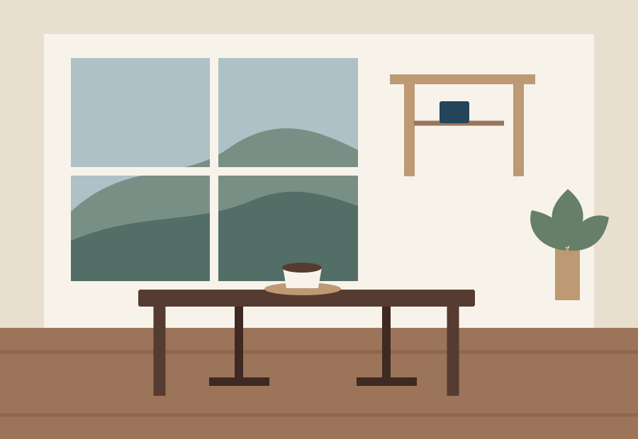

把豆子選好
認真挑選咖啡豆，讓每款咖啡都有清楚、舒服的風味。
ABOUT BLACK TRACK
從一杯日常咖啡開始，為忙碌生活留一段自在的空間。

HOW IT BEGAN
黑軌咖啡的起點，是想在日常裡找到一個可以稍微停下來的地方。咖啡香氣讓人放鬆，也讓獨處、閱讀或聊天都有了自然的節奏。
我們希望把這份簡單的感受分享出去：一杯好好準備的咖啡，一個舒服的座位，還有不需要趕時間的片刻。
WHAT WE BELIEVE
認真挑選咖啡豆，讓每款咖啡都有清楚、舒服的風味。
專注烘焙過程，讓香氣與口感平衡呈現。
不論短暫停留或慢慢坐下，都能用自己喜歡的方式享受咖啡。
